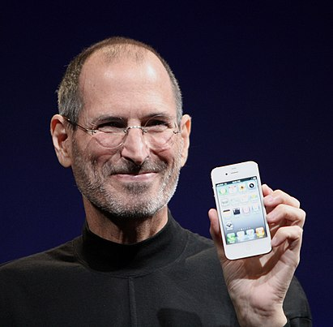

Стив Джобс
Стивен Пол (Стив) Джобс (англ. Steven Paul «Steve» Jobs; 24 февраля 1955, Сан-Франциско, Калифорния, США — 5 октября 2011, Пало-Алто, Санта-Клара, Калифорния, США) — американский предприниматель, изобретатель и промышленный дизайнер, получивший широкое признание в качестве пионера эры информационных технологий. Один из основателей, председатель совета директоров и CEO корпорации Apple. Один из основателей и CEO киностудии Pixar.

В конце 1970-х годов Стив Джобс и его друг Стив Возняк разработали один из первых персональных компьютеров, обладавший большим коммерческим потенциалом. Компьютер Apple II стал первым массовым продуктом компании Apple, созданной по инициативе Стива Джобса. Позже Джобс увидел коммерческий потенциал графического интерфейса, управляемого мышью, что привело к появлению компьютеров Apple Lisa и, год спустя, Macintosh (Mac).
Проиграв борьбу за власть с советом директоров в 1985 году, Джобс покинул Apple и основал NeXT — компанию, разрабатывавшую компьютерную платформу для вузов и бизнеса. В 1986 году он приобрёл подразделение компьютерной графики кинокомпании Lucasfilm, превратив его в студию Pixar. Он оставался CEO Pixar и основным акционером, пока студия не была приобретена The Walt Disney Company в 2006 году, что сделало Джобса крупнейшим частным акционером и членом совета директоров Disney.
Трудности с разработкой новой операционной системы для Mac привели к покупке NeXT компанией Apple в 1996 году, для использования ОС NeXTSTEP в качестве основы для Mac OS X. В рамках сделки Джобс получил должность советника Apple. К 1997 году Джобс вернул контроль над Apple, возглавив корпорацию. Под его руководством компания была спасена от банкротства и через год стала приносить прибыль. В течение следующего десятилетия Джобс руководил разработкой iMac, iTunes, iPod, iPhone и iPad, а также развитием Apple Store, iTunes Store, App Store и iBookstore. Успех этих продуктов и услуг, обеспечивший несколько лет стабильной финансовой прибыли, позволил Apple стать в 2011 году самой дорогой публичной компанией в мире. Многие комментаторы называют возрождение Apple одним из величайших свершений в истории бизнеса. В то же время Джобса критиковали за авторитарный стиль управления, агрессивные действия по отношению к конкурентам, стремление к тотальному контролю за продукцией даже после её реализации покупателю.
Джобс получил общественное признание и ряд наград за оказанное влияние на индустрию технологий и музыки. Его часто называют «визионером» и даже «отцом цифровой революции». Джобс был блестящим оратором и вывел презентации инновационных продуктов на новый уровень, превратив их в увлекательные шоу. Его легко узнаваемая фигура в чёрной водолазке, потёртых джинсах и кроссовках окружена своеобразным культом.
Детство
Стивен Пол Джобс родился 24 февраля 1955 года. Его родителями были незарегистрированные в браке студенты: уроженец Сирии Абдулфаттах (Джон) Джандали и Джоан Шибле из католической семьи немецких эмигрантов. Джоан училась в магистратуре Висконсинского университета, а Джандали там же работал ассистентом преподавателя. Поскольку родственники Джоан возражали против их отношений, а находившийся при смерти отец и вовсе пригрозил лишить её наследства, ей пришлось уехать рожать к частному врачу в Сан-Франциско и затем отдать ребёнка на усыновление.
Мальчик был усыновлён Полом Джобсом и американкой армянского происхождения Кларой Джобс, урождённой Агопян (Clara Hagopian). Своих детей Джобсы иметь не могли. Они и назвали приёмного сына Стивеном Полом. Джоан хотела, чтобы приёмные родители Стивена имели высшее образование, и, узнав, что Клара не окончила колледж, а Пол учился только в средней школе, подписала бумаги об усыновлении только после того, как они дали письменное обязательство оплатить обучение Стивена в колледже. Джобс всегда считал Пола и Клару отцом и матерью, он очень раздражался, если кто-то называл их приёмными родителями: «Они — мои настоящие родители на 100 %». Согласно правилам официального усыновления, биологические родители ничего не знали о местонахождении сына, и Стив встретился с родной матерью и младшей сестрой только через 31 год.
Когда Стиву исполнилось два года, Джобсы удочерили девочку Пэтти, а ещё через три года семья переехала из Сан-Франциско в Маунтин-Вью. Пол был автомехаником и работал в финансовой компании CIT. В семейном гараже он ремонтировал старые машины на продажу, чтобы заработать на образование Стива и выполнить обязательства перед его биологическими родителями. Пол также старался привить сыну любовь к профессии автомеханика. Это занятие не пришлось Стиву по душе, но через автомобили отец познакомил его с азами электроники. Вместе они разбирали и собирали радиоприёмники и телевизоры, в результате Стив заинтересовался и увлёкся подобной техникой. Клара Джобс работала бухгалтером в Varian Associates — одной из первых хай-тек-компаний, позже вошедших в состав Кремниевой долины. Она научила Стива читать, прежде чем он пошёл в школу.
Школа
Школьные занятия разочаровали Стива своим формализмом. Преподаватели начальной школы Мона-Лома характеризовали его как проказника, и только одна учительница, миссис Хилл, смогла увидеть в своём ученике незаурядные способности и найти к нему подход. Когда Стив обучался в четвёртом классе, миссис Хилл давала ему за хорошую учёбу «взятки», в виде сладостей, денег и наборов «сделай сам», тем самым стимулируя его обучение. Это быстро принесло плоды: вскоре Стив начал прилежно учиться без всякого подкрепления, а в конце учебного года настолько блистательно сдал экзамены, что директор предложил перевести его из четвёртого класса сразу в седьмой. В результате по решению родителей Стив был зачислен в шестой класс, то есть в среднюю школу. Это была школа в Криттенден, в нескольких кварталах от Мона-Лома, но совсем в другом, криминальном районе. И на улице, и в самой школе хулиганы не давали Джобсу прохода. Через год Стив поставил перед родителями ультиматум о переводе в другую школу. Семье пришлось на последние сбережения купить дом в более приличном районе, в южном Лос-Альтосе.
В дальнейшем Джобс учился в средней школе и в старшей школе Хоумстед в Купертино. После переезда семьи отец устроился на работу механиком в соседний городок Санта-Клара в самом центре будущей Кремниевой долины, в компанию Spectra-Physics[de], производившую лазеры.
Стив общался с инженером Ларри Лэнгом, жившим по соседству со старым домом Джобсов. Лэнг привёл Стива в научно-исследовательский клуб компании Hewlett-Packard. «На занятие приглашали инженера из какой-нибудь лаборатории, он приходил и рассказывал, над чем сейчас работает» — вспоминал позже Джобс. Здесь же Стив впервые увидел персональный компьютер (программируемый калькулятор) HP 9100A, который произвёл на него огромное впечатление. Участники кружка работали над собственными научными проектами, и Стив решил собрать цифровой частотомер. Когда для реализации замысла ему понадобились детали, производимые Hewlett-Packard, тринадцатилетний Джобс, недолго думая, позвонил домой главе компании, Биллу Хьюлетту. В результате он получил не только нужные детали, но и работу на конвейере в HP по окончании первого года обучения в Хоумстеде, благодаря личному приглашению Хьюллета. Кроме этой работы, возбуждавшей зависть сверстников, Стив разносил газеты, а в следующем году служил на складе в магазине электроники Haltek. К пятнадцати годам у Джобса уже был первый собственный автомобиль — двухцветный Nash Metropolitan, купленный при финансовом участии отца. Пол Джобс также установил на машину двигатель от MG. Через год Стив, прикопив ещё денег, смог обменять этот автомобиль на красный Fiat 850 Coupé. Тогда же Стив Джобс начал общаться с хиппи, слушать Боба Дилана и The Beatles, курить марихуану и употреблять ЛСД, из-за чего некоторое время конфликтовал с отцом.
Джобс подружился со своим одноклассником Биллом Фернандесом, который тоже интересовался электроникой. Фернандес познакомил Джобса с увлекавшимся компьютерами выпускником, настоящей «легендой» школы, Стивеном Возняком (также известным как «Воз»), старшим его на пять лет. В 1969 году Воз с Фернандесом начали собирать небольшой компьютер, который они прозвали «крем-содовым» и показали Джобсу. Так Стив Джобс и Стив Возняк стали лучшими друзьями:
«Мы долго сидели с ним на тротуаре перед домом Билла и делились историями — мы рассказывали друг другу про свои розыгрыши и про разработанные нами устройства. Я чувствовал, что у нас много общего. Мне обычно тяжело объяснять людям все тонкости электротехнических устройств, которые я собирал, но Стив хватал всё на лету. Мне он сразу понравился».
Синяя коробочка
Первый настоящий бизнес-проект Джобс осуществил ещё во время обучения в школе. В сентябре 1971 года Возняк, который к тому времени уже давно учился в университете, узнал из журнала «Esquire» о неких «телефонных фриках», которые научились взламывать телефонные коды и совершать бесплатные звонки по всему миру. Захват телефонной линии осуществлялся с помощью звуковой имитации тонального сигнала определённой частоты. Затем нужно было набрать номер, также через имитацию вызова в тональном режиме. Как оказалось, существовала целая субкультура фрикеров, занимающихся взломом телефонных сетей. Один из них, скрывавшийся под псевдонимом Капитан Кранч, обнаружил, что свистулька, которую производители вкладывали в упаковки с одноимёнными овсяными хлопьями («Cap’n Crunch»), может издавать звук нужной тональности, подходящей для захвата линии. Для последующего набора номера Кранч использовал самодельное устройство под названием «Blue box» («синяя коробочка»). Возняк и Джобс, ещё тогда занимающиеся обслуживанием кондиционеров, загорелись идеей изготовить такую «коробочку». Первый изготовленный Возняком аналоговый прототип оказался несовершенен и не выдавал надёжных тоновых сигналов. Тогда Возняк сделал полностью цифровое устройство, воспроизводившее частоты с необходимой точностью, и устройство заработало.
Сначала друзья развлекались, названивая в разные уголки мира и устраивая розыгрыши. Однако вскоре Джобс осознал коммерческий потенциал их изобретения. Они организовали кустарное производство и успешные продажи «синих коробочек» среди студентов и местных жителей, хотя этот бизнес был незаконным и довольно рискованным. Сначала изготовление одной «коробки» обходилось примерно в 80 долларов, но затем Возняк сделал печатную плату, позволявшую изготавливать сразу по 10-20 «коробок», и себестоимость одной штуки упала до 40 долларов. Готовые «коробочки» друзья продавали по 150 долларов за штуку, доход делили поровну. Всего они сделали и успели сбыть около сотни «коробок» и неплохо заработали. Бизнес было решено прекратить после пары неприятных инцидентов с потенциальными покупателями и полицией. Вероятно, история с «синими коробками» убедила Джобса, что электроника может не только доставлять радость, но и приносить хороший доход. Эта же история заложила принципы их будущего сотрудничества: Возняк ради блага человечества изобретает очередную гениальную штуку, а Джобс придумывает, как её оформить и преподнести на рынке, чтобы хорошо заработать.
Рид-колледж
Летом 1972 года после окончания школы Стив Джобс ушёл из родительского дома и вместе со своей подружкой Крис-Энн Бреннан поселился в хижине, в горах над Лос-Альтосом, несмотря на возражения родителей. В том же году он поступил в Рид-колледж в Портленде (штат Орегон). Это был частный гуманитарный университет, один из самых дорогих в Америке, и родителям, много лет откладывавшим каждый цент на образование сына, было тяжело оплачивать его обучение. Но Стив не хотел учиться нигде больше, и большая часть родительских сбережений была потрачена на его обучение в Риде. Рид славился вольными нравами и хипповской атмосферой, притом что стандарты обучения были очень высокими, а учебная программа насыщенной. В Риде Джобс впервые всерьёз заинтересовался восточными духовными практиками, особенно дзен-буддизмом. Тогда же он стал убеждённым вегетарианцем и начал эксперименты с голоданием.
В Рид-колледже Джобс познакомился с Дэниелом Коттке, ставшим наравне с Возняком его лучшим другом, а также с прирождённым лидером Робертом Фридландом, президентом студенческого совета, управляющим яблоневой фермой и последователем восточной философии, оказавшим большое влияние на Джобса:
«Роберт был коммуникабельным, харизматичным парнем, настоящим продавцом. А Стив, когда я познакомился с ним, был застенчив, скрытен, держался в тени. Я думаю, это Роберт научил его тому, как продавать, как выйти из своей скорлупы, раскрыться и овладеть ситуацией».
Работа в Atari
В феврале 1974 года Джобс устроился техником в молодую компанию Atari в Лос-Гатосе (Калифорния). Компания занималась производством видеоигр и уже имела в своём активе один абсолютный хит — аркадный симулятор Pong для двоих игроков. Джобс, получая 5 долларов в час, стал одним из первых пятидесяти её сотрудников. В Atari Джобс занимался в основном доводкой игр «до ума», выдвигая интересные и оригинальные предложения по дизайну. Однако там его сразу невзлюбили за высокомерие и неопрятный внешний вид. Но основателю и главе Atari Нолану Бушнеллу Стив понравился, и он перевёл Джобса на работу в ночную смену, сохранив перспективного сотрудника:
«Он был философом в отличие от многих, с кем мне приходилось работать. Мы частенько рассуждали о свободе воли и предопределении. Я утверждал, что все предопределено, что мы все запрограммированы. И если иметь достоверные исходные данные, то можно предсказывать действия других людей. Стив считал иначе.»
В апреле 1974 года Джобс отправился в Индию в поисках духовного просветления. Причём Джобсу удалось убедить руководство Atari оплатить ему дорогу до Мюнхена, где он выполнил поручение, связанное с бизнесом компании. В Индии Джобс, по совету Фридланда, собирался посетить гуру Нима Кароли Бабу, но оказалось, что тот умер в сентябре 1973 года. К тому же по дороге Джобс переболел дизентерией и похудел на 15 килограммов. Пришлось задержаться в деревне для восстановления сил. В начале лета к Джобсу присоединился Коттке. Вдвоём они совершили долгий путь до ашрама Хариахан Бабы. Они потратили много времени на автобусные поездки из Дели в штат Уттар-Прадеш и обратно, а затем в Химачал-Прадеш и обратно. Джобс не стал искать другого гуру, а попытался достичь просветления самостоятельно, с помощью аскезы, голодания и простоты. По воспоминаниям Коттке, «внутренней тишины» в Индии Джобсу достичь не удалось, а близким друзьям Стив признавался, что затеял эту поездку и вообще погрузился в испытания различных духовных и мистических практик, чтобы заглушить боль от осознания того, что его бросили сразу после рождения. После семимесячного пребывания в Индии Джобс вернулся в США исхудавшим, красно-коричневым от загара, с выбритой головой и в традиционной индийской одежде.
После возвращения Джобс всё-таки смог найти себе духовного наставника — прямо в Лос-Альтосе. Им стал Кобун Чино Отогава, ученик основателя центра дзэн-буддизма в Сан-Франциско Сюнрю Судзуки, автора книги «Сознание дзэн, сознание начинающего». Отогава по средам читал в Лос-Альтосе вечерние лекции и проводил медитации с учениками. Джобс стал серьёзным практиком дзэн-буддизма, участвовал в длительных медитациях в центре дзэн «Тассахара» и даже подумывал о том, чтобы податься в ученики при храме Эйхэйдзи в Японии, но наставник уговорил его остаться в Америке.
В это время Джобс экспериментировал с психоделиками. Позже он называл свой опыт употребления ЛСД «одной из двух или трёх самых важных вещей, совершённых им в жизни» и прибавлял, что люди, не пробовавшие «кислоту», никогда не смогут понять его до конца.
В начале 1975 года Джобс вернулся в Atari. Тогда шла доработка игры Breakout и была объявлена премия за оптимизацию схемы игры в размере 100 долларов за каждый исключенный из схемы чип. Джобс вызвался взяться за эту работу, но, так как плохо разбирался в разработке электронных схем, вынужден был обратиться к Возняку, работавшему тогда в Hewlett-Packard. Дополнительная сложность заключалась в сроках — Джобс заявил, что работу нужно было выполнить за 4 дня. На разработку такой схемы обычно требуется несколько месяцев, но Джобс смог убедить Возняка, что тот справится за 4 дня.
Возняк практически не спал четверо суток, днём работая на основной работе, но выполнил задание, разработав за отведённое время схему игры. При этом, к большому удивлению инженеров Atari, он использовал всего 45 чипов (подобные схемы тогда содержали 130—170 чипов, а наиболее удачно разработанные — 70—100 чипов). За эту работу Джобс передал Возняку чек на 350 долларов. Однако позднее выяснилось, что Джобс обманул своего партнёра, сообщив, что в Atari ему заплатили только 700 долларов. Джобс умолчал об объявленной премии в 100 долларов за каждый сэкономленный чип, и которая составила 5000 долларов. Получалось, что эту премию Джобс полностью присвоил себе. Кроме того, четырёхдневный срок Джобс тоже выдумал, потому что хотел успеть на ферму Фридланда к сбору урожая яблок и торопился на самолёт. Получив деньги, он бросил работу в Atari.
«Клуб самодельных компьютеров»
5 марта 1975 года состоялось первое собрание группы энтузиастов, называвших себя «Клубом самодельных компьютеров» (Homebrew Computer Club). Члены клуба собирались в Менло-Парке, в гараже Гордона Френча, безработного инженера. Все они также были инженерами и «фанатами» компьютерной техники, объединяло их желание изменить бытующее представление о компьютерах, как об очень дорогих и громоздких устройствах, требующих в использовании специальных навыков. Внедрение новых технологий в жизнь простых людей предполагалось через пропаганду самостоятельного проектирования и кустарного изготовления компьютеров. На встрече присутствовал Стив Возняк. Уже после первого собрания он с большим рвением взялся за проектирование машины, позднее получившей известность как Apple I. Клуб стал для Возняка вторым домом, тем более что идеи, звучавшие на собраниях, становились всё более дерзкими и грандиозными, речь шла уже о целой «компьютерной революции» в интересах всего человечества. Такая постановка задачи полностью отвечала взглядам Возняка, и уже к концу июня он получил первый уникальный для того времени результат: вывод на экран символов, набираемых на клавиатуре. Воз тут же продемонстрировал своё изобретение Стиву Джобсу, на которого оно произвело огромное впечатление.
После этого Джобс тоже стал посещать «Клуб самодельных компьютеров», во всяком случае, в 1975 году он был на нескольких встречах: Воз демонстрировал свой компьютер другим членам клуба по окончании собраний, а Джобс помогал ему дотащить телевизор, выполнявший функции дисплея, а также с настройкой. Кроме того, Джобс смог бесплатно достать для компьютера Возняка лучшие, дорогие и очень дефицитные на тот момент чипы «динамической» оперативной памяти (DRAM) производства Intel. Собрания клуба посещали уже более 100 человек, и заседания стали проводиться в одной из аудиторий Стэнфордского центра линейных ускорителей, под председательством инженера-пацифиста Ли Фельзенштейна.
Как и в случае с «синими коробочками», Джобс довольно скоро завёл разговор о коммерческом потенциале изобретения Возняка. Прежде всего, он убедил Воза перестать раздавать чертежи компьютера всем желающим, хотя это не отвечало принципам «Домашнего компьютерного клуба», созданного для свободного обмена идеями и бескорыстной взаимопомощи. Джобс также обратил внимание, что члены клуба активно работают над чертежами, но до рабочих моделей проекты, как правило, не доводятся из-за недостатка времени и навыков у их авторов. Тогда Стив предложил Возу продавать в клубе готовые печатные платы, то есть взять самую сложную часть работы на себя, а покупателю оставалось бы по готовым чертежам припаять к плате чипы. По расчётам Джобса, производство одной платы обходилось бы в 20 долларов, а продавать их он собирался вдвое дороже. Возняк поначалу отнёсся к этой идее скептически: бизнес требовал не менее 1000 долларов стартовых вложений, которые могли окупиться после продажи 50 единиц товара. Хотя в клубе было уже около 500 членов, многие из них были сторонниками модных готовых решений вроде Altair 8800, и Воз не видел достаточного числа клиентов. Но Джобс слишком хорошо знал своего друга. Он не стал убеждать Возняка, что компания непременно принесёт доход, а расписал их предприятие как увлекательное приключение. И это сработало:
«Я подумал, что это будет здорово. Два лучших друга организуют свою компанию. Класс. Я понял, что очень этого хочу. Как я мог отказаться?»
Apple Computer
Чтобы собрать нужную сумму, Джобсу пришлось продать свой «хипповый» микроавтобус Volkswagen T1 и пересесть на велосипед, а Возняк сбыл с рук одно из главных своих сокровищ — программируемый калькулятор HP-65. Из вырученных средств Джобс заплатил знакомому сотруднику Atari за создание схемы печатной платы, которую потом можно было бы отдать в серийное производство. В январе 1976 года первая партия плат поступила в распоряжение компаньонов.
Джобсу нужен был третий голос на случай разногласий с Возняком, и Стив взял в долю ещё одного инженера из Atari, своего друга Рона Уэйна, имевшего неудачный опыт ведения собственного дела по производству игровых автоматов для казино, а потому неплохо разбиравшегося в законодательстве и составлении документов. Джобс также надеялся с помощью Уэйна убедить Возняка бросить проектирование калькуляторов для Hewlett-Packard и полностью сосредоточиться на их бизнесе.
Оставалось зарегистрировать фирму и можно было приступать к реализации товара. Но сначала нужно было определиться с названием будущей компании. Джобс как раз вернулся из Орегона, с «Единой фермы» (All-One Farm) Фридланда. Эта ферма была настоящей хипповской коммуной, — Стив там подрезал яблони и даже сел на яблочную диету, став фрутарианцем и решив, что теперь он очистился, и ему достаточно мыться не чаще раза в неделю. В Лос-Альтос он возвращался абсолютно счастливым. Воз встретил его в аэропорту и отвёз на машине в город. По дороге они подбирали название для будущей компании, так как на следующее утро уже нужно было подавать документы на её регистрацию. Джобс предложил «Apple Computer»:
«Название звучало забавно, энергично и не страшно. Слово «apple» (яблоко) смягчало серьёзное «компьютер». К тому же в телефонном справочнике мы бы оказались перед Atari.»
Джобс заявил, что если к утру не будет предложено ничего лучшего, название Apple останется. Так и случилось. Поэтому компьютер, разработанный Возняком, получил название Apple I.
Компания была зарегистрирована 1 апреля 1976 года. Трёхстороннее соглашение о партнёрстве составил Уэйн, он же написал первое руководство для Apple I и создал первый логотип Apple. Впрочем, уже через 12 дней Уэйн, по его собственным словам, осознал, что «не потянет» темпа, заданного партнёрами, и покинул компанию, забрав свою долю — 800$, а затем получив ещё 1500$ за письменный отказ от любых претензий.
Apple I
На очередном собрании «Клуба самодельных компьютеров» Джобс с Возняком впервые устроили презентацию своего компьютера. Стив Джобс, оказавшийся прирождённым оратором, говорил страстно и убеждённо, обращаясь с риторическими вопросами к аудитории. Однако заинтересованность в приобретении Apple I проявил только один человек: Пол Террелл, владелец компьютерного магазина Byte, недавно открывшегося на Камино-Реал в Менло-Парке. На следующий день Джобс заявился к нему в магазин босиком — и заключил сделку, которую они с Возняком потом называли главной в их жизни. Террелл заказал сразу 50 штук, но его не интересовали печатные платы, ему нужны были компьютеры в полной комплектации, и за каждый он платил 500 долларов. Джобс тут же согласился, хотя для выполнения такого заказа у них не было средств. Требовалось 15 тысяч долларов, но Джобс и тут нашёл выход: 5 тысяч смог занять у друзей, а комплектующие получил у дистрибьютора Cramer Electronics в кредит на 30 дней, причём поручителем сделал Террелла, который фактически профинансировал весь проект.
Компаньоны оккупировали дом и гараж Джобсов. Закипела работа, Стив привлёк всех, кого смог. Его друг Дэниел Коттке и беременная сестра Патти вставляли чипы, получая за это по доллару за плату. Элизабет Холмс, бывшая девушка Дэниела, имевшая опыт в ювелирном деле, поначалу занималась пайкой микросхем. Но когда она случайно капнула на плату припоем, Джобс объявил, что запасных комплектующих у них нет и перевёл её на учёт и оформление документов. Пайку же он взял на себя. Контроль качества и, при необходимости, устранение неисправностей, осуществлял Возняк. Во время этой совместной работы Джобс впервые проявил себя как довольно жёсткий, авторитарный руководитель. Исключение он делал только для Воза, на которого ни разу не повысил голос за всё время их дружбы и сотрудничества.
Через месяц заказ был готов: 50 компьютеров компаньоны поставили Терреллу и рассчитались по кредиту за комплектующие. К Apple I не прилагались ни клавиатуры, ни мониторы, ни блоки питания, даже корпусов не было — только полностью укомплектованные системные платы. Несмотря на это, Apple I многими признаётся как первый в истории компьютер, поставлявшийся производителем в готовом виде — ведь другие компьютеры того времени, включая Altair, попадали на рынок в виде наборов, которые предстояло собирать розничному продавцу или конечному покупателю. Внешний вид Apple I явно не совпадал с ожиданиями Террелла, но благодаря дипломатическим способностям Джобса он пошёл навстречу и в этот раз, согласившись оплатить заказ. Производство плат обошлось гораздо дешевле, чем предполагалось, так как Джобсу удалось договориться с поставщиком о значительной скидке на комплектующие. На сэкономленные средства удалось собрать ещё 50 устройств, которые Джобс с Возняком распродали знакомым из «Клуба самодельных компьютеров», получив прибыль. В дальнейшем компаньонам удалось реализовать ещё более сотни компьютеров Apple I по другим магазинам и среди знакомых. Элизабет оформили бухгалтером компании с окладом 4 доллара в час, а Клара, мать Джобса, отвечала на звонки под видом секретаря. У клиентов и деловых партнёров, никогда не бывавших в доме Джобсов, складывалось впечатление, что по этому адресу действительно расположена солидная фирма с большим штатом.
Apple II
По словам Стивена Возняка, Apple I был всего лишь доработкой придуманного им ранее терминала для ARPANET и не содержал электронных новаций, за исключением использования «динамической» памяти. Во время работы над Apple I Возняку приходили неординарные идеи, но ему хотелось завершить этот проект как можно скорее, и Воз принял решение реализовать их позже, в отдельной модели, спроектированной «с нуля». Работа над платой Apple II была завершена к августу 1976 года. Новый продукт Apple имел множество революционных возможностей: работа с цветом, звуком, подключение игровых контроллеров и другое.
Джобс сделал выводы из опыта продаж Apple I и понял, что Пол Террелл был прав:
«Мы хотели, чтобы нашими покупателями стала не только ограниченная группа любителей, которые знают, где купить клавиатуру, трансформатор, и сами собирают компьютеры. На одного такого знатока приходится тысяча людей, которые предпочтут купить устройство, готовое к использованию.»
Из-за переориентации бизнеса на массового неискушённого потребителя между Джобсом и Возняком возникли первые серьёзные разногласия. Джобс предлагал оставить только два слота: для принтера и модема. Возняк настаивал, что слотов должно быть восемь: «Люди вроде меня обязательно придумают, что бы ещё такого добавить в свой компьютер». Но Джобс предпочитал сам решать, что нужно людям. В итоге Стиву пришлось уступить, так как всегда покладистый Воз на этот раз поставил ультиматум, предложив партнёру поискать для продажи другой компьютер.
Ещё один важнейший вывод, вскоре сделанный Джобсом, — дизайн устройства имеет огромное значение. В августе Джобс и Возняк посетили первый Фестиваль персональных компьютеров (Personal Computer Festival) PC’76 в Атлантик-Сити, где продемонстрировали Apple I. Джобс отметил, что при всех неоспоримых функциональных преимуществах их проекта, он проигрывал в презентабельности компьютеру Sol-20 от Processor Technology (разработка членов «Клуба домашних компьютеров» Гордона Френча, Ли Фельзенштейна и Боба Марша).
Осознав этот факт, Стив стал подходить к каждому компоненту компьютера с точки зрения совершенства дизайна. В магазине он увидел кухонный комбайн Cuisinart и решил, что Apple II нужен корпус из лёгкого формованного пластика. Потом Джобс решил избавиться от вентилятора в блоке питания, так как, по его словам, вентилятор внутри компьютера противоречит принципам дзэн и отвлекает от работы. Даже к топологии системной платы он подошёл с теми же принципами, отвергнув первую схему, так как «дорожки» показались ему недостаточно гармоничными.
Разработку дизайна корпуса Джобс поручил консультанту Джерри Мэноку, знакомому по «Клубу самодельных компьютеров», за 1500$. Проектировщик из Atari Эл Элкорн свёл Джобса с Родом Холтом, хорошо разбиравшимся в электротехнике. Холт запросил высокую цену, но зато разработал импульсный источник питания и со временем был зачислен в штат Apple.
Прикинув расходы, Джобс понял, что наладить серийный выпуск полностью укомплектованных компьютеров с пластиковым корпусом и оригинальным дизайном им не по карману. Речь шла о ста тысячах долларов на производство корпусов, и не менее чем о двухстах тысячах — на запуск в производство самих компьютеров. Джобс решил попытаться продать права на всю разработку Atari и снова связался с Элом Элкорном. Как и Бушнелл, Эл был человеком неформальных взглядов, он устроил Джобсу встречу с директором Atari Джо Кинаном. Из этого ничего не вышло: джобс пришёл, чтобы отрекламировать ему новый продукт, но Кинан его едва дослушал. От Стива пахло так, что старика мутил.
Тогда Джобс провёл презентацию Apple II в штаб-квартире Commodore. Во время выступления Джобс вёл себя настолько нагло и самоуверенно, что Возняк готов был сквозь землю провалиться от стыда. Руководство Commodore им отказало, но Джобс и не думал сдаваться. Он отправился обратно в Atari и предложил Бушнеллу вложить в проект 50 тысяч долларов в обмен на треть акций Apple. Снова отказ, о котором Бушнелл потом очень жалел. Из сочувствия Бушнелл посоветовал Джобсу обратиться к основателю одной из первых венчурных компаний Sequoia Capital Дону Валентайну, который раньше, будучи директором по маркетингу в National Semiconductor, занимался полупроводниками.
Apple III
Первой попыткой спроектировать и выпустить компьютер, при разработке которого во главу угла с самого начала ставились маркетинговые задачи, был Apple III. Работа над этой моделью началась в конце 1978 года под непосредственным руководством доктора Уэнделла Сандера, так как Возняк курировал направление Apple II, разрабатывая различные его модификации, и не считал нужным проектировать что-то иное, поскольку идеальный компьютер, по его мнению, уже был создан. Проект Apple III фактически был отдан на откуп маркетинговому отделу и лично Стиву Джобсу. Apple III являлся кардинальной переработкой компьютера Возняка, ориентированной на бизнес, а Apple II предполагалось перепозиционировать как младшую модель, любительский компьютер для дома. Маркетологи выяснили, что бизнесмены, приобретая Apple II для работы, как правило, докупали к компьютеру две дополнительные платы расширений, позволяющие работать с масштабными таблицами. Было решено поставлять всё вместе, в одном корпусе. При этом габариты и форма корпуса были жёстко заданы Джобсом, и он не позволил их изменять, так же как и устанавливать вентиляторы — проблема теплоотвода решалась за счёт тяжёлого алюминиевого корпуса. Джобс в это время занимал должность вице-президента компании по научным исследованиям и разработкам, и его требования выполнялись, независимо от их обоснованности. Чтобы не потерять поклонников Apple II, было решено оставить возможность загрузки и в старом режиме. По сути, это были два разных компьютера в одном корпусе: ОС для Apple III была разработана заново, и программы для Apple II для неё не подходили.
Машина была анонсирована и выпущена 19 мая 1980 года, выпуск сопровождался грандиозной рекламной кампанией. С выходом на рынок Apple III все работы по Apple II были свёрнуты, ресурсы компании переброшены на новый проект. Однако быстро выяснилось, что в режиме Apple III компьютеры работают нестабильно: постоянно выходят из строя из-за перегрева, чрезмерной плотности компонентов на монтажной плате и плохих коннекторов. Кроме того, на рынке практически не было качественных программ для Apple III. В режиме Apple II полноценно использовать компьютер также было нельзя, поскольку разработчики заблокировали подключение дополнительных внешних плат. Машину удалось доработать, повысив стабильность, но репутация Apple III уже была безнадёжно испорчена. В 1983 году компьютеры IBM PC вышли на первое место по объёмам продаж, оставив позади продукцию Apple, а ещё через два года Apple III была полностью снята с производства.
В отчётных документах Apple начала 1980-х годов не указывалось, что компанию по-прежнему вытягивает Apple II, и могло сложиться впечатление, будто Apple III неплохо продаётся, однако аналитики в один голос утверждали, что это был полный провал.
Apple Lisa
Стив Джобс охладел к Apple III ещё на этапе разработки. Однако его неуёмная энергия требовала выхода, и Джобс затеял новый проект. Он привёл в Apple двух инженеров из Hewlett-Packard и поставил перед ними задачу разработать «продвинутый» компьютер на базе процессора с 16-битной архитектурой и стоимостью порядка 2000 долларов. Составить бизнес-план Джобс поручил специалисту по маркетингу Трипу Хокинсу. Возглавил инженерную группу бывший директор HP Кен Ротмюллер, позже его заменили на Джона Коуча. Джобс дал проекту название Lisa, в честь своей недавно родившейся дочери, которую, в то же время, не хотел признавать. Точно так же он не признавал связи между её именем и названием компьютера. Подробности личной жизни Джобса передавались из уст в уста и оказывали негативное влияние на имидж компании. PR-менеджерам из агентства Реджиса Маккены пришлось изобрести невразумительный бэкроним «Local Integrated Systems Architecture», «расшифровывающий» название проекта. Обмануть кого-то таким образом было невозможно, и в компании ходили альтернативные шуточные расшифровки вроде «Lisa: Invented Stupid Acronym» (Лиза: Выдуманная Идиотская Аббревиатура). Инженеры Apple выполнили задание, спроектировав качественный и более мощный, по сравнению с Apple II, но совершенно заурядный компьютер, в котором по сути не было ничего нового. Единственным светлым пятном оказались приложения, написанные инженером Биллом Аткинсоном, в частности, версия языка программирования высокого уровня Pascal для Apple II.
Положение дел с Lisa категорически не устраивало Джобса: ему нужен был прорыв, движение вперёд, а не повторение пройденного. На помощь пришёл Джеф Раскин, специалист Apple по компьютерным интерфейсам и преподаватель Билла Аткинсона по Калифорнийскому университету в Сан-Диего. Раскин с Аткинсоном уговаривали Джобса начать сотрудничество с научно-исследовательским центром Xerox PARC, расположенном в Пало-Алто. Компания Xerox, специализировавшаяся на копировальной технике, имела в своём распоряжении много передовых IT-разработок, имевших, в основном, ограниченное распространение. Например, компьютер Xerox Alto, разработанный ещё в 1973 году, поддерживал графический интерфейс пользователя, но производство этой машины так и не было поставлено на поток, и несколько тысяч Alto использовались в самом Xerox PARC и в различных университетах. Годом раньше сотрудник Xerox Уильям Инглиш изобрёл шариковую компьютерную мышь. Также компания готовила к выпуску первый общедоступный объектно-ориентированный язык программирования Smalltalk, над его разработкой трудился Ларри Теслер.
Помимо прочего, Xerox занималась венчурными инвестициями, и летом 1979 года руководство компании выразило заинтересованность в приобретении акций Apple. Джобс тут же выдвинул условие: 100 тысяч акций по 10 долларов за штуку, а взамен сотрудники Apple получают доступ к последним разработкам Xerox. Соглашение было достигнуто: Стив получил приглашение осмотреть Xerox PARC для себя и ещё нескольких сотрудников Apple. Руководство Xerox сочло, что «выскочки» из Apple всё равно ничего не поймут в их разработках, а если и смогут в них разобраться, сотрудничество будет взаимовыгодным. Теслеру такое внимание со стороны Джобса польстило, поскольку собственное начальство не слишком его привечало. Другой разработчик Smalltalk, Адель Голдберг, напротив, была возмущена действиями руководства, вдруг решившего сдать все секреты конкурентам, и приложила максимум усилий, чтобы Джобс с коллегами узнали как можно меньше. Им показали несколько текстовых приложений на Alto, ничего особенного. Джобс понял, что его пытаются одурачить, позвонил в штаб-квартиру Xerox и потребовал организовать повторную экскурсию. На этот раз он взял с собой Билла Аткинсона и программиста Брюса Хорна, который раньше работал в Xerox PARC. Сотрудники Xerox вновь постарались отделаться «малой кровью», показывая гостям текстовые редакторы, а затем попытались выдать открытую демонстрационную версию Smalltalk за полнофункциональную. Опять не сработало: Аткинсон с коллегами их быстро «раскусили». Джобс вышел из себя и по телефону нажаловался начальнику отдела венчурных инвестиций Xerox. Руководство компании тут же связалось с научным центром и потребовало немедленно показать Джобсу полные возможности разработки. Голдберг пришлось сдаться.
Набег Apple на Xerox PARC называют самым дерзким грабежом в истории IT-индустрии. Джобс выведал важнейшие секреты Xerox: Ethernet, возможности объектно-ориентированного программирования, графический растровый интерфейс, принцип WYSIWYG, манипулятор «мышь». Речь не шла о передаче сотрудникам Apple каких-либо кодов, программ или чертежей, но этого и не требовалось. Главным были идеи, а их воплощение силами Apple становилось вопросом времени, по оценке Аткинсона, порядка полугода.
Если Джобс когда-то и чувствовал неловкость из-за этого «воровства» с согласия «ограбленных», она должна была пройти в 1981 году, когда в магазины поступил компьютер Xerox Star. Новинка от Xerox содержала все «украденные» Джобсом инновации на несколько лет раньше, чем ими успела воспользоваться Apple, и при этом с треском провалилась в продаже. Компания Xerox имела превосходные шансы захватить компьютерный рынок, но упустила эту возможность. Следующий ход был за Apple.
После возвращения из Xerox PARC Джобс переманил в Apple Ларри Теслера и инженера Xerox Бобби Белвилла. Сам же стал с ещё большим воодушевлением вмешиваться в работу группы Lisa, требуя, чтобы, с одной стороны, в проекте были реализованы идеи Xerox, причём все и на более высоком уровне исполнения, а с другой — чтобы компьютер оставался доступным для массового покупателя. Джобс запросто мог позвонить какому-нибудь инженеру среди ночи и диктовать ему свои указания в обход непосредственного руководства группы. Кроме этого, день ото дня он становился всё агрессивнее. В конце концов, Джобс так затерроризировал сотрудников, что Марккула и Скотт, не посмотрев на статус основателя и главного акционера компании, за его спиной провели реорганизацию Apple. 25-летнего Джобса сместили с поста вице-президента по научным исследованиям и разработкам, пересадив в почётное кресло председателя совета директоров, без реальных полномочий. Для Коуча придумали должность главы отдела по разработке проекта Lisa, и теперь его решения не подлежали обсуждению.
Macintosh
Джеф Раскин, так своевременно обративший внимание Джобса на разработки Xerox, с 1979 года вёл в Apple ещё один проект с «женским» именем — Annie. Раскин хотел создать недорогую, всего за тысячу долларов, портативную машину. Она должна была складываться как чемоданчик и больше напоминать бытовой прибор, чем компьютер. Вскоре после начала работы над проектом Раскин изменил его название на Macintosh, в честь своего любимого сорта яблок. Корпорация к этому времени уже занимала отдельное здание на Бэндли-драйв 3, а в нескольких кварталах от него, в старом офисе Apple на Стивенс-Крик, в отдалении от начальства трудилась небольшая группа проекта Macintosh. Работа продвигалась медленно, но в группе, помимо Раскина, был и второй «мотор» — Баррелл Смит, молодой инженер-самоучка, поклонник Стива Возняка. Смиту удалось почти невозможное: сделать графический интерфейс на одной плате с использованием только стандартных компонентов. Засекреченный прототип Lisa к этому моменту был построен на базе пяти печатных плат и огромного количества комплектующих, изготовленных на заказ. Прототип Macintosh был втрое дешевле и при этом работал вдвое быстрее. Неудивительно, что Раскину несколько раз удавалось спасти проект от закрытия. Джобс немедленно переключился с проекта Lisa на Macintosh.
Разногласия между Джобсом и Раскиным были принципиальными, а потому непреодолимыми. Раскин проектировал компьютер, отталкиваясь от его конечной цены. Он установил планку в 1000 долларов и стал смотреть, что за эти деньги можно сделать. Результат не впечатлял, Раскин пытался выжать из ограниченного бюджета всё возможное, но прогресса по качеству и привлекательности практически не было. Джобс исповедовал другой подход: сначала постановка задачи, затем решение и, наконец, поиск оптимизации и удешевления этого решения, но ни в коем случае не за счёт потери в качестве или отказа от намеченных целей. Кроме того, Джобс мечтал взять реванш за неудачу с Lisa и воплотить, теперь уже в Macintosh, все технологии, виденные им в научном центре Xerox. Раскин, хоть и лично привёл Джобса к этим технологиям, одобрял лишь некоторые из них: а именно, оконный интерфейс и растровую графику, но ему совершенно не понравились пиктограммы и манипуляторы типа «мышь». Бывший ученик Раскина, Билл Аткинсон, поддержал Джобса, и Стив решил полностью переукомплектовать команду Macintosh, оставив лояльных ему людей и пригласив ещё нескольких специалистов.
Джобс шёл на обострение: Раскин отдавал распоряжения или назначал совещания — Джобс их отменял. К тому же Стив вызвал на состязание команду Lisa, заключив с Джоном Коучем пари на 5 тысяч долларов, что группа Macintosh первой выпустит инновационный продукт и что он будет лучше и дешевле машины Lisa. Раскин обратился за помощью к руководству компании, отправив Майку Скотту письмо, озаглавленное «Работа со Стивом Джобсом и на него»:
«Он отвратительный руководитель… Работать с ним невозможно… Он регулярно пропускает встречи. Он действует, не подумав и толком не разобравшись в ситуации… Никому не доверяет… Когда ему рассказывают новые идеи, он сперва все критикует, говорит, что это полная ерунда и бесполезная трата времени. Но если идея хорошая, то вскоре он начинает рассказывать всем о ней так, будто это он придумал…»
Скотти переложил трудное решение на Марккулу. Тот вызвал к себе Джобса и Раскина. Стив, как это часто с ним случалось в критические моменты, расплакался, но свою позицию не изменил. Отстранить Джобса от работы второй раз подряд было немыслимо, особенных причин для этого тоже не было — проект под руководством Раскина явно буксовал. Воспользоваться же ситуацией в своих интересах, отправив конфликтного основателя компании подальше от центра корпорации, для решения второстепенной и заведомо бесперспективной задачи казалось куда более заманчивой идеей.
В начале 1981 года Джобс возглавил проект Macintosh. Джефа Раскина отправили в вынужденный отпуск, и он уволился из Apple. Вскоре Раскин получил возможность завершить свою разработку в Canon. Специализированный настольный компьютер Canon Cat, выпущенный в 1987 году по его проекту, содержал множество уникальных идей, но коммерческого успеха не имел. Джобс сразу же приступил к обновлению команды Mac, вскоре в ней оказалось около 20 человек, но Джобс продолжал набирать новых сотрудников. Каждому кандидату он торжественно демонстрировал прототип компьютера, наблюдая за реакцией. Если кандидат оживлялся, начинал обо всём расспрашивать и стремился тут же всё опробовать, Джобс зачислял его в группу.
Портативностью компьютера Джобс решил пожертвовать, при этом жёстко ограничив его габариты. Джерри Мэнок и Терри Ояма делали гипсовые модели корпуса, но Джобс каждый раз делал всё новые замечания. Он хотел, чтобы компьютер выглядел как можно более дружественным, и постепенно внешний вид Mac стал отдалённо напоминать человеческое лицо. Джобс стремился довести до совершенства внешний вид каждого элемента, начиная с окон и пиктограмм, и заканчивая упаковкой, которую покупатель тут же выбросит. Даже внутренние части компьютера должны были выглядеть гармонично, несмотря на то, что их будут видеть только разработчики и сервисные служащие. Тут же проявлялась и обратная сторона перфекционизма Джобса: он был убеждён, что доступ к содержимому системного блока должны иметь только сотрудники Apple, а пользователю там делать нечего, так как он должен воспринимать продукт Apple как единое целое, а не как набор компонентов. Для обеспечения такого восприятия Джобс шёл на весьма непопулярные меры, вплоть до использования нестандартных шурупов, под которые пользователю было крайне трудно подобрать отвёртки. Джобс не задумываясь жертвовал совместимостью и, как следствие, существенной частью рынка ради имиджа: покупатель должен чувствовать, что приобретает уникальное и законченное произведение искусства.
По этой же причине, а также из-за личных амбиций Джобса, уязвлённого отстранением от разработки Lisa, два компьютера, параллельно разрабатывавшиеся в Apple и адресованные одной аудитории, не были совместимы друг с другом ни в части комплектующих, ни в области программного обеспечения. Это, в свою очередь, означало жёсткую конкуренцию между Lisa и Macintosh за покупателя, и даже вражду между двумя группами инженеров и программистов Apple. Действия Джобса вели к расколу коллектива компании, но Стив ничего не предпринимал для его преодоления, — напротив, он не упускал случая отпустить колкость или ещё какую-нибудь выходку в адрес проектировщиков Lisa, объявляя Macintosh «убийцей» этого проекта.
Универсальный стиль для всей последующей продукции Apple Джобс не рискнул разрабатывать самостоятельно, а решил довериться профессионалам. В 1982 году он организовал конкурс, в котором победу одержал баварец Хартмут Эсслингер, разработавший дизайн телевизоров Sony Trinitron. Эсслингер по приглашению Джобса перебрался в Калифорнию вместе со своей фирмой, где зарегистрировал её под названием Frog Design, подписав контракт с Apple на 1,2 млн долларов. К 1984 году компания Apple внедрила стиль «Белоснежка», придуманный Эсслингером. Этот стиль стал глобальным трендом на рынке компьютеров и оргтехники.
Во время работы над Macintosh Джобс побывал в Японии, посетив там некоторые высокотехнологичные производства. Далеко не всё на японских заводах ему понравилось, но образцовой дисциплиной и безупречной чистотой в цехах он был поражён. Вернувшись в Калифорнию, Джобс принял решение выстроить во Фримонте завод по производству Macintosh. Он распорядился выбелить заводские стены, а станки покрасить в яркие цвета, чем шокировал сотрудников и рабочих.
Компьютер Lisa был представлен публике в январе 1983 года, и Джобс проспорил Коучу 5 тысяч долларов. Lisa выгодно отличалась от продукции конкурентов высоким качеством и передовыми возможностями. Но недоступная цена, порядка 10 000$, не позволила ей стать массовым домашним компьютером, Lisa не показала высоких продаж. В то же время, был период, когда во многих американских офисах работал хотя бы один такой компьютер, на котором сотрудники могли попеременно готовить документы, выглядевшие очень достойно для своего времени. Таким образом, Джобс, проиграв сражение, уверенно продвигался к окончательной победе в войне. Продукту противника была отведена незавидная роль: разогрев рынка в ожидании пришествия Mac.
Постепенно Джобс пришёл к представлению о своей группе, как о шайке пиратов, в которой он выступает главарём. «Лучше быть пиратом, чем служить во флоте!» — заявил он. Джобс переманил к себе лучших специалистов компании, работавших над другими проектами, из проекта Lisa он похитил всё ценное, что там было наработано за 3 года. Наконец, в середине 1983 года «шайка» Джобса выбралась из тесного офиса на задворках корпорации, «взяла на абордаж» штаб-квартиру Apple на Бэндли-драйв и, окончательно обосновавшись в ней, водрузила на крыше «Весёлого Роджера». Подчинённым Стива подобные игры и сама атмосфера бунтарства пришлись по душе, чего нельзя было сказать о прочих сотрудниках и руководстве компании. Но Джобс сумел настоять на своём, и чёрный флаг развевался над главным зданием Apple до завершения работ над Mac. Джобс хорошо понимал, что дух авантюризма и бунтарства — это, прежде всего, командный дух. Деби Коулман заказала фуфайки с капюшоном, на которых было написано: «Работаю 90 часов в неделю, и мне это нравится!». Группа Lisa в ответ вышла на работу в футболках с надписью «Работаем 70 часов в неделю и выпускаем продукт». Группа Apple II, твёрдо знавшая себе цену и давно уставшая от разборок внутри компании, «утёрла нос» и тем и другим, выбрав своим девизом «Работаем 60 часов в неделю и зарабатываем деньги на оплату Lisa и Mac»
Несмотря на то, что Джобс всё больше прибирал к рукам нити руководства компанией, к 1983 году практически восстановив своё влияние и авторитет, он понимал, что многое будет зависеть от того, кто займёт кресло президента Apple. Временно после увольнения Скотта обязанности президента исполнял Марккула. Это длилось уже более двух лет, и всё это время Марккула подыскивал себе замену. Очевидной кандидатурой был Джобс, но оба они понимали, что Стив ещё не созрел для руководства корпорацией. Пришлось искать кандидата на стороне. Джерри Рош, руководитель кадровой службы, предложил кандидатуру Джона Скалли, сверхуспешного маркетолога, президента подразделения Pepsi-Cola корпорации PepsiCo. Джобс тут же взял Скалли в обработку, которая продолжалась несколько месяцев и которую Айзексон описывает как любовный роман. Они созванивались по десять раз в день и много времени проводили вместе. В беседах Джобс умело и тонко льстил, полностью раскрываясь перед Скалли, и добился такого же доверия с его стороны. Однако Скалли никак не решался оставить размеренный и очень успешный бизнес в Pepsi. Тогда Джобс без предупреждения перешёл в атаку, задав Скалли убийственный вопрос: «Вы хотите до конца своих дней продавать подслащённую водичку или всё-таки решитесь попробовать изменить мир?» По словам Скалли, ему показалось, будто его ударили под дых:
Стив умел всегда добиваться своего, он читал людей, как открытую книгу, и точно знал, что нужно сказать каждому. Впервые за четыре месяца я почувствовал, что не могу отказаться
Скалли был совершенно очарован Джобсом и принял предложение возглавить Apple. Однако довольно скоро Стиву пришлось пожалеть о своём выборе. Джобс спроецировал на Скалли качества, которыми обладал сам, и даже более того — убедил Скалли в том, что тот ими тоже обладает. На деле же Скалли оказался лишь эффективным менеджером, нацеленным на получение максимальной прибыли. Он воображал себя романтиком и идеалистом, тогда как Джобс был им в действительности. Первый серьёзный конфликт между ними произошёл незадолго до презентации Macintosh, когда Скалли настоял на включении в цену продукта расходов на рекламную кампанию, что привело к удорожанию компьютера на 500 долларов. Джобс был вне себя, но сделать ничего не смог.
Кризис и увольнение
После успешного выхода Macintosh на рынок позиции Стива Джобса в Apple временно упрочнились. Отделы Lisa и Macintosh были слиты в один, который возглавил Джобс. Однако уже через год продажи Macintosh стали резко падать. Пользователи успели изучить сильные и слабые стороны компьютера, и последние заставляли их делать выбор в пользу IBM. Прежде всего, Macintosh, с его 128 килобайтами оперативной памяти, был слишком медленным для выполнения возложенных на него задач, апгрейд же производителем не предусматривался. Новейшие компьютеры IBM к 1985 году имели уже 1 МБ на борту. Во-вторых, в Macintosh не было жёсткого диска, и пользователям приходилось постоянно переставлять 3,5" дискеты. Наконец, из-за отсутствия вентиляторов Macintosh имел серьёзные проблемы с охлаждением. Что касается Lisa, то продажи этой модели были и вовсе на нуле. Тогда Джобс пошёл на очень сомнительный шаг, отдав распоряжение на нераспроданные компьютеры «линейки» Lisa установить эмуляцию Macintosh и выбросить результат на рынок под брендом Macintosh XL. Продажи утроились, но по сути это был обман, против которого взбунтовались многие ведущие специалисты Apple.
Вторым неудачным действием Джобса стал запуск рекламной кампании комплекта Macintosh Office. Комплект должен был состоять из файлового сервера, сетевого оборудования для терминалов Macintosh на протоколах AppleTalk и лазерного принтера LaserWriter. Джобс попытался взять тот же напористый и агрессивный тон, который принёс успех год назад, но «перегнул палку». В новом ролике под названием «Lemmings» офисные менеджеры с чёрными повязками на глазах стройными рядами шли к обрыву и падали с него, один за другим. И только Macintosh Office «открывал им глаза». Реклама получилась слишком мрачной и депрессивной, в ней не было и следа прошлогоднего драйва и оптимизма. К тому же, многих потенциальных клиентов Apple она была способна попросту обидеть, и сотрудники компании, в отличие от Джобса, это понимали. Ролик был встречен холодно, и проект Macintosh Office не состоялся.
Спад продаж и сомнительные действия руководства вызвали уход ряда ведущих специалистов, с которыми Джобс расставался слишком легко и самоуверенно. К началу 1985 года компанию покинули Энди Херцфельд, Джоанна Хоффман, Баррелл Смит — главные «рабочие лошадки» проекта Macintosh. Даже Стив Возняк собирался уйти, чтобы основать собственную компанию по производству пультов дистанционного управления, но его уговорили остаться на полставки. Джобс будто не замечал происходящего и продолжал «выжимать» и «загонять» оставшихся сотрудников. Он закрывал заседания поздно ночью, рассылал многословные факсы, затем назначал новые заседания на 7 утра. Джобс становился всё более замкнутым и раздражительным, в любой момент мог сорвать злость на первом встречном. Кризис также вызвал ухудшение рабочих отношений Джобса и Скалли, что привело к борьбе за власть между ними. Джобс к этому времени уже считал Скалли неподходящим человеком для руководства компанией и вообще «плохим для Apple». Однако руководство его не поддержало, и было принято решение постепенно отстранить Джобса от управления компанией, тем более что у него созрела идея создания исследовательского центра AppleLabs, где он мог бы стать эффективным руководителем. Джобс некоторое время метался между желанием сохранить власть в компании и соблазном в очередной раз оказаться «капитаном пиратского корабля». Он несколько раз просил об отсрочке, но в конце концов не удержался — задумал в отсутствие Скалли устроить переворот в совете директоров и захватить власть. Даже самые верные сторонники Джобса сочли этот план безумием и пытались его отговорить. Скалли обо всём узнал, отменил поездку и 24 мая 1985 года на заседании совета директоров разоблачил планы Джобса. Совет встал на сторону Скалли и уволил Джобса с должности руководителя отдела Macintosh. Стив считал, что его все предали и бросили. Ему выделили маленький домик, в стороне от основных зданий Apple, Джобс называл его «Сибирью». Через некоторое время он просто перестал ходить на работу и убедился, что его отсутствия никто не замечает. Так Джобс продержался пять месяцев на формальной должности председателя совета директоров, без реальных полномочий, после чего ушёл из Apple и в том же году основал NeXT Inc.
В своём выступлении перед выпускниками Стэнфордского университета в 2005 году Джобс сказал, что увольнение из Apple было лучшим, что могло с ним случиться в тот момент:
Бремя успешного человека сменилось легкомыслием начинающего, менее уверенного в чём-либо. Я освободился и вошёл в один из самых креативных периодов своей жизни. <…> Я уверен, что ничего из этого не случилось бы, если бы меня не уволили из Apple. Лекарство было горьким, но пациенту оно помогло.
Возвращение в Apple
К середине 1990-х Джобс уже был главой семьи: жена Лорен Пауэлл и двое детей. Ему требовался постоянный и надёжный источник дохода. Его компания NeXT, съёжившаяся до NeXT Software Inc. со штатом в 240 сотрудников, поставляла передовое программное обеспечение таким крупным заказчикам как Dell, The Walt Disney Company, WorldCom, Би-би-си, находилась в тупике. Джобс понимал, что только своими силами не выбраться, и снова стал смотреть в сторону Apple, дела которой тоже шли не блестяще. После ухода Джобса Apple несколько лет продержалась на старых идеях и разработках, а затем её доля на рынке упала с 16 % до 4 %.
Первый разговор между Стивом Джобсом и директором Apple Гилом Амелио (англ.)русск. о возможном объединении или поглощении NeXT состоялся в 1994 году: в распоряжении NeXT была многозадачная объектно-ориентированная операционная система NeXTSTEP, и к ней интерфейс программирования приложений (API) OpenStep, а в распоряжении Apple — аппаратная база и производственные мощности. Через два года Амелио осознал глубину кризиса Apple и вернулся к предложению Джобса. Конкуренцию NeXT за право слияния с Apple составила Be Inc., основанная в 1990 году Жаном-Луи Гассе, когда-то сменившим Джобса на посту главы отделения Macintosh и закрывшим его проект Big Mac. Гассе предлагал использовать BeOS в новом компьютере Apple и был уверен в победе. Тем не менее, вскоре Apple объявила, что купит NeXT за 427 миллионов долларов. Сделка была завершена в конце 1996 года. После покупки NeXT большая часть технологий компании нашла своё применение в продуктах Apple — в первую очередь NeXTSTEP, ставшая основой для Mac OS X.
20 декабря Джобс вернулся в основанную им компанию, и был представлен коллективу Apple как «советник председателя». В компании сразу же стало ощущаться движение: производство было сокращено, последовала череда кадровых замен и перестановок. Стало ясно, что Джобс попытается вернуть Apple себе, хотя сам он называл себя лишь «консультантом» и всячески открещивался от претензий на власть, ссылаясь на занятость в Pixar и необходимость уделять больше времени семье. В то же время, Джобс быстро сумел провести преданных ему людей на ключевые позиции в компании и приобрёл довольно однозначную репутацию:
«Мистер Джобс стал в Apple серым кардиналом. Говорят, решения по сокращению производства зависят именно от него. Мистер Джобс призывал некоторых бывших сотрудников Apple вернуться в компанию, прозрачно намекая, что планирует захватить власть. По словам человека, пользующегося доверием мистера Джобса, он полагает, что Амелио и его ставленники вряд ли сумеют возродить Apple, поэтому хочет заменить их, дабы спасти «свою» компанию.»
iMac
Первым достижением альянса Джобса и Айва стал iMac G3 (англ.)русск.. Как и Macintosh четырнадцатью годами ранее, он был представлен в аудитории Флинта колледжа Де Анца, 6 мая 1998 года. Моноблочный компьютер с CRT-дисплеем имел совершенно «безумный» футуристический дизайн. По словам Джобса, «он словно прибыл с прекрасной планеты, населённой выдающимися художниками».
iMac первого поколения был похож одновременно и на космический аппарат, и на каплю воды, и даже на лампу из «Luxo Jr.», знаковой дебютной короткометражки студии Pixar. Корпус был выполнен из прозрачного пластика цвета «бондийский синий» — по цвету воды у побережья (англ.)русск. Австралии — и позволил, наконец, показать сквозное гармоничное единство внешнего и внутреннего, столь важное для Джобса. Позже Айв подобрал ещё несколько цветов пластика для iMac G3. «Задняя часть нашего компьютера лучше, чем передняя любого другого» — гордо заявляли в Apple. Венцом разработки стала удобная ручка, утопленная в корпус компьютера и как бы приглашавшая прикоснуться к нему:
«Когда мы продемонстрировали проект инженерам, они тут же привели 38 причин, по которым его нельзя было реализовать. А я говорю: «Нет, он должен быть реализован». «Почему это?» — спрашивают они. «Потому что я генеральный директор компании — ответил я, — и считаю, что это можно сделать». И им пришлось подчиниться»
iMac стал самым быстро продаваемым компьютером в истории Apple. Около трети продаж пришлись на тех, кто никогда раньше не покупал компьютер, — таким образом, Джобсу снова удалось создать продукт, «который не внушает людям страха». Успех iMac G3 способствовал популяризации интерфейса USB среди производителей периферии, о чём свидетельствует тот факт, что многие ранние USB-устройства были сделаны из полупрозрачного пластика, чтобы соответствовать дизайну нового компьютера от Apple.
С тех пор привлекательный дизайн и мощный брендинг работали на Apple. На выставке Macworld Expo в 2000 году Джобс официально убрал слово «временный» из названия своей должности в Apple и стал постоянным CEO. Джобс шутил тогда, что будет называть свою должность iCEO.
Apple Store
Стиву Джобсу очень не нравились условия, в которых продаются товары Apple. Во-первых, компьютерная техника продавалась, в основном, в крупных торговых центрах. В них часто даже не было фирменных отделов — техника Apple и конкурирующих марок могла располагаться на одной полке, консультанты были заинтересованы в продаже любого товара и слабо разбирались в его возможностях, не говоря уже о «философии» продукта, которая для Джобса всегда стояла на первом месте. Продажа через онлайн-магазин решала проблему лишь отчасти: полноценного контакта между Apple и потребителем всё равно не получалось. Во-вторых, магазины электроники располагались, как правило, на окраинах, где арендная плата ниже. По мнению маркетологов, для покупателей это имело большое значение, так как компьютеры приобретаются нечасто и стоят довольно дорого — ради покупки по более выгодной цене можно съездить и за город. Стив Джобс, напротив, был убеждён в необходимости прийти к потребителю, чтобы тот мог получить квалифицированную консультацию и приобрести товар рядом со своим домом.
К концу 1999 года Джобс задумался о создании специализированного магазина Apple. Перед ним были два примера: негативный опыт IT-компании Gateway (англ.)русск., прогоревшей после открытия собственной сети пригородных магазинов, и успешный опыт компании Gap, владельца сети магазинов по продаже одежды. Джобс пришёл к выводу, что ошибка Gateway заключалась, прежде всего, в том, что они не рискнули приблизить свои магазины к покупателю, в остальном же никакой принципиальной разницы между продажей компьютеров и одежды нет.
Джобс также нанял вице-президента отдела продаж компании Target Рона Джонсона. Миллард посоветовал Джобсу не торопиться с открытием магазина, а для начала втайне полностью его смоделировать. Для этой цели был снят пустующий склад в Купертино. Джобс часто бывал там, с Джонсоном или в одиночестве, обдумывая все детали. Постепенно склад стал напоминать дизайнерскую студию.
Через полгода прототип магазина был готов. Это было помещение с одним входом, разделённое на четыре части — по числу основных продуктов, выпускаемых Apple на тот момент: iMac, iBook, Power Macintosh G3 и PowerBook G3 (англ.)русск.. И тут Джонсон понял, что эта концепция никуда не годится — секции должны разделяться не по «линейкам» продуктов, а по их предназначению: работа с музыкой, с видео и так далее. Джобс пришёл в ярость, но вынужден был признать правоту Джонсона. Пришлось отложить открытие магазина на несколько месяцев и всё переделывать с самого начала.
Первые два магазина Apple Store открылись 19 мая 2001 года: «Tyson’s Corner» в городе Маклин (англ.)русск. (Вирджиния) и «Glendale Galleria» в городе Глендейл (Калифорния). Магазины оформлены в традициях баухауса и архитектурного минимализма. В сдержанных и лаконичных интерьерах соединены дерево, камень, сталь, стекло. Джобс сам продумывал и утверждал каждую деталь, от полов из тосканского песчаника и уникальных стеклянных лестниц до постеров и выключателей на стенах. Идея «Бара гениев», представляющего собой нечто среднее между баром и стойкой ресепшн, принадлежала Джонсону. Он предложил разместить в этой секции лучших специалистов Apple в качестве консультантов, и назвать их «гениями». Джобс сначала раскритиковал идею за претенциозность, заявив, что они не «гении», а косноязычные гики, однако в дальнейшем утвердил предложение Джонсона.
Аналитики дружно предрекали Apple Store провал, но через 3 года магазины Apple посещало в среднем 5400 человек в неделю. На 2012 год в мире действуют более 370 магазинов Apple Store, ещё более 50 готовятся к открытию. Магазины Apple Store приносят наибольший доход с квадратного метра — не только в США, но и в Европе. Открытие каждого нового магазина ожидается фанатами с не меньшим нетерпением, чем выпуск нового устройства Apple, и проходит в не менее торжественной обстановке. Коммерческий и маркетинговый успех Apple Store побудил и другие компании открывать собственные фирменные магазины.
iTunes
На рубеже веков IT-отрасль бурно развивалась. Приближался бум цифровой фотографии. Появились доступные CD и DVD-приводы с возможностью записи данных. Пиринговые сети позволили делиться любой информацией и получать её практически бесплатно. Это был колоссальный неосвоенный рынок, на котором, кроме производителей компакт-дисков, никто всерьёз не работал, и который для получения прибыли предварительно следовало упорядочить. В то же время, крах доткомов 2000 года ударил по подавляющему большинству компаний, работавших в сфере высоких технологий. Рынок персональных компьютеров также переживал стагнацию. В этих условиях Стив Джобс пришёл к глобальному замыслу о компьютере, как о цифровом центре, дополненном переносными компактными устройствами, простыми программами для работы с медиаконтентом и удобными сетевыми сервисами. Это позволило бы совершить прорыв в отрасли, и Apple, производившая и компьютеры, и периферию, и программное обеспечение, выглядела чуть ли не единственной компанией, способной на решение столь масштабной задачи.
Эта грандиозная работа началась с создания качественного программного обеспечения. Вместе с iMac поставлялся видеоредактор iMovie, а сам компьютер был оснащён скоростным последовательным портом FireWire для передачи видео, что и стало отправной точкой. В дальнейшем программа iMovie стала первым компонентом пакета для работы с мультимедиа iLife. 9 января 2001 года был представлен универсальный медиаплеер iTunes. В его основе лежала разработка бывших сотрудников Apple Билла Кинкейда (англ.)русск., Джеффа Роббина (англ.)русск. и Дейва Хеллера под названием SoundJam MP (англ.)русск.. Все трое вернулись в Apple после того, как компания выкупила SoundJam. Джобс принимал активное участие в доработке и упрощении плеера.
iPod
Важной частью цифрового узла должен был стать миниплеер. MP3-плееры с флеш-памятью появились на рынке в конце 1990-х, но ни один из них Джобса не устроил: это были сложные и дорогие устройства с ограниченными возможностями — они вмещали лишь полтора-два десятка песен в хорошем качестве. CD-плееры, поддерживающие MP3-формат, тоже не годились: большие габариты, трудоёмкая запись дисков, недостаточная надёжность. Было принято решение создать собственное устройство, специально для работы с iTunes на iMac. Вице-президенту по инженерным разработкам Джону Рубинштейну (англ.)русск. удалось заполучить экспериментальные 1,8-дюймовые жёсткие диски Toshiba объёмом 5 ГБ. Рубинштейн продумал также остальные компоненты плеера и поручил собрать всё воедино инженеру Тони Фаделлу. Джонатан Айв предложил белый цвет для всего устройства. Белые наушники-капли смотрелись особенно странно, но Джобс поддержал Айва, и пользователи iPod получили возможность выделиться в толпе. В целях ограничения нелегального распространения контента Джобс принял решение технически запретить скачивание музыки с iPod на другие устройства, а на упаковке плеера поместить надпись «Не укради музыку». Джобс также упразднил выключатель, и это стало отличительной особенностью многих устройств Apple — они просто «засыпают» во время бездействия и «просыпаются» после нажатия любой кнопки.
Первое поколение iPod было выпущено 23 октября 2001 года. Джобс свернул рекламную кампанию iMac, верно рассчитав, что продажи iPod подстегнут спрос и на компьютеры. Рекламная кампания была построена не на функциональных преимуществах плеера, они для этого были слишком очевидны. iPod позиционировался как культовый аксессуар и действительно обрёл этот статус: более ста тысяч плееров были проданы до конца 2001 года, а за 10 лет было реализовано более 300 миллионов устройств. В 2005 году заметным трендом в общественной жизни Америки стало обсуждение содержимого iPod публичных персон, вплоть до президента США.
С выпуском iPod компания Apple стала крупным игроком музыкальной индустрии. Компания выпускала различные вариации плеера: с жёстким диском и флеш-памятью, с возможностью воспроизведения видео, с сенсорным экраном и вообще без него. Последний вариант был предложен Джобсом в ходе последовательной миниатюризации устройства и, к удивлению многих, пользовался колоссальным спросом.
iTunes Store
Успех iPod подготовил почву для открытия собственного магазина музыки Apple. 28 апреля 2003 года Стив Джобс в Москони-центре в Сан-Франциско представил музыкальный онлайн магазин iTunes Store. Этому событию предшествовала продолжительная работа с гигантами индустрии, и Джобсу удалось склонить их к сотрудничеству. Он настоял, чтобы песни в магазине продавались не альбомами, а поштучно, по 99 центов за композицию. Такой подход поначалу вызвал опасения со стороны звукозаписывающих компаний и исполнителей: ведь большинство покупателей приобретают альбомы ради двух-трёх хитов. Однако Джобсу было чем возразить: «Пиратство и интернет уже уничтожили саму идею альбомов. Невозможно тягаться с пиратством, если не продавать песни по одной». Джобс пообещал, что покупателями магазина iTunes станут только пользователи Mac, а это всего 5 % рынка персональных компьютеров.
iPhone
Феноменальный успех iPod не принёс Джобсу спокойствия. Развитие мобильных телефонов уже привело к падению спроса на фотоаппараты и цифровые камеры, и Джобс понимал, что скоро телефон вберёт в себя все возможные функции, а значит, каким бы удобным ни был музыкальный плеер, он окажется невостребованным. Apple обязательно нужно было занять свою нишу на рынке мобильных телефонов. Попытка пойти простым путём, объединив усилия и технологии с опытным производителем, оказалась неудачной: гибрид iPod и RAZR от Motorola под названием ROKR получил плохие отзывы. Тогда было решено модифицировать iPod своими силами, добавив в плеер функции телефона.
Одновременно в Apple полным ходом шла разработка собственного интернет-планшета, для которого был придуман мультисенсорный интерфейс. Но этот проект заморозили, так как телефон был более приоритетной задачей. Интерфейс планшета адаптировали к размеру телефонного экрана, и дальнейшая работа шла по двум направлениям: одна группа пыталась переделать iPod, сохранив диск, другая трудилась над мультитач-дисплеем. Удобное для прокрутки списков колесо оказалось совершенно непригодным для набора номера, и в производство был запущен второй вариант. В начале 2005 года Apple купила фирму FingerWorks, которая разрабатывала и производила мультисенсорные панели управления.
По настоянию Джобса механическая клавиатура была убрана, её функции на себя полностью взяла программная часть. От пластикового экрана Джобс отказался, приняв решение опробовать новый вид материала — стекло. Оно должно было быть очень прочным и устойчивым к царапинам. Такой материал, разработанный ещё 1960-е годы и не нашедший тогда применения, оказался в каталоге компании Corning Glass. Джобс убедил руководство этой компании в необходимости и возможности наладить массовый выпуск этого стекла в сверхсжатые сроки. Для этого один из заводов Corning Glass был перепрофилирован буквально за сутки.
После девяти месяцев напряжённой работы Джобс понял, что дизайн телефона его не устраивает. Главным козырем модели был большой стеклянный экран, но его визуально подавлял металлический корпус.
Стеклянный экран был доведён до самого края, металлической осталась лишь узкая полоска на торце. Это зрительно подчинило все части экрану, телефон стал приятнее на ощупь, но пришлось изменить расположение внутренних компонентов.
Телефон был представлен в январе 2007 года на традиционной выставке Macworld Expo. Айзексон склонен считать эту презентацию лучшей в карьере Стива Джобса. Согласно опросам, 6 из 10 американцев знали о его выпуске 29 июня 2007 года. Журнал Time объявил его изобретением года. В последующих модификациях были добавлены новые возможности, включая голосовое управление и виртуальный помощник Siri.
В июле 2008 года на iTunes был открыт онлайн-магазин приложений App Store. Сторонние разработчики получили возможность создавать приложения, но они должны были проходить обязательное утверждение в Apple: Джобс сумел предоставить пользователям некоторую свободу, не отказавшись от полного контроля. За пять лет было продано более 250 миллионов телефонов серии iPhone, что принесло Apple около 150 миллиардов долларов дохода.
iPad
Следующие годы Стив Джобс много болел, но всё же принял участие в разработке интернет-планшета iPad. Джобс с Айвом заказали два десятка подобных устройств разных производителей, чтобы определиться с оптимальным форм-фактором. 27 января 2010 года Джобс провёл презентацию iPad. Ни одно из предыдущих его выступлений не было столь ожидаемым, пресса сравнивала Джобса с Христом и Моисеем, принёсшим людям Скрижали Завета. Однако сама презентация многих разочаровала. Джобс подавал iPad как недостающее звено между смартфоном и ноутбуком, как «правильную» альтернативу нетбуку. Слушатели мало что поняли и не прочувствовали преимуществ подобных планшетов. Билл Гейтс, в частности, получил возможность в очередной раз заявить, что будущее за нетбуками с механической клавиатурой и стилусом, а iPad — «хорошая читалка и не более». Рекламная кампания также получилась довольно невнятной и слишком обычной для Apple.
Ответы на накопившиеся вопросы дал сам iPad, продажи которого начались 3 апреля 2010 года. Менее чем за год, к марту 2011, было продано 15 миллионов устройств. По некоторым данным, это был самый успешный запуск потребительского продукта в истории. На iPad работало большинство приложений для iPhone, последовал бум создания множества приложений для iPad сторонними и частными разработчиками. К iPad прикладывалась бесплатная программа для чтения электронных книг iBooks, был открыт магазин iBookstore, конкурирующий с Amazon.
Презентация iPad 2 прошла 2 марта 2011 года. На ней Стив Джобс назвал конкурентов, успевших выпустить аналоги iPad, «подражателями», и объявил 2011 год «годом iPad 2». Особой гордостью Джобса на этой презентации стал разработанный при его участии съёмный чехол на магнитах, спроектированный вместе с планшетом. Ещё одним важным мотивом его выступления стало опровержение сложившегося мнения, будто iPad — устройство не столько для созидания, сколько для потребления. Чтобы скорректировать имидж продукта, Джобс отвёл значительную часть презентации для демонстрации одних из наиболее креативных приложений — iMovie и GarageBand.
Отставка
Последнюю в своей жизни презентацию Стив Джобс провёл 6 июня 2011 года на WWDC, представив сервис iCloud и iOS 5. 24 августа Джобс подал в отставку с поста CEO компании Apple, сохранив за собой пост председателя совета директоров. Через несколько часов акции Apple Inc. (AAPL) упали на 5 % после закрытия торгов. Это относительно небольшое снижение, учитывая важность Джобса для Apple, было связано с тем, что его здоровье освещалось в новостях в течение нескольких лет, и он был в отпуске по болезни с января 2011 года. По сообщению Forbes, ожидалось, что негативные последствия этого объявления будут ощущаться и за пределами Apple, в том числе в The Walt Disney Company, где Джобс был одним из директоров. После закрытия торгов акции Walt Disney Co. (DIS) упали на 1,5 %.